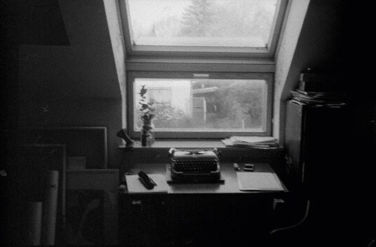
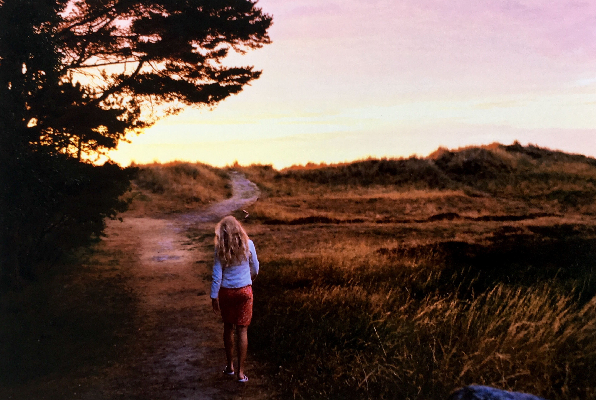
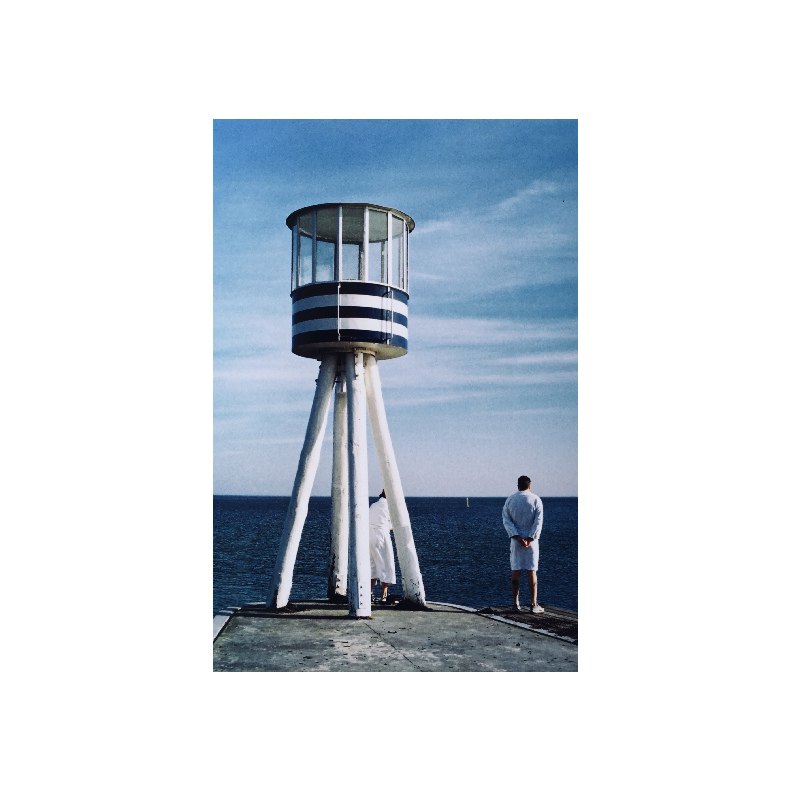
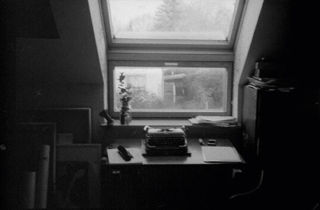
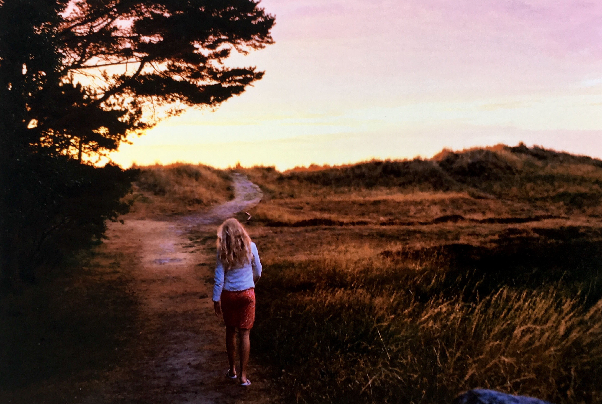
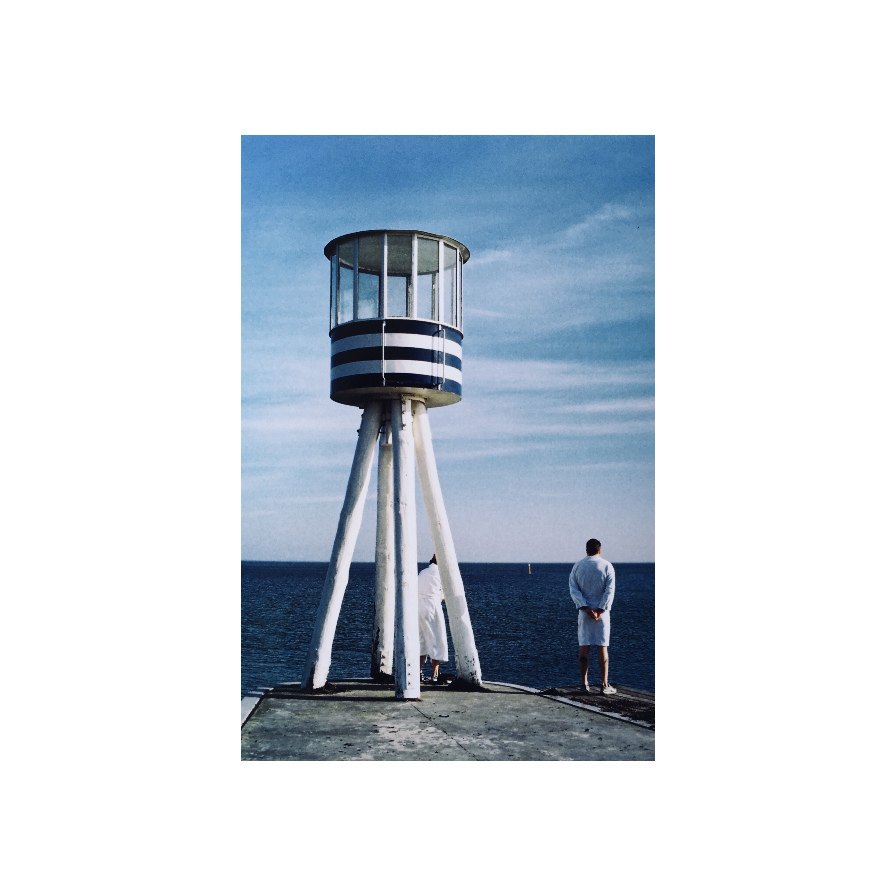
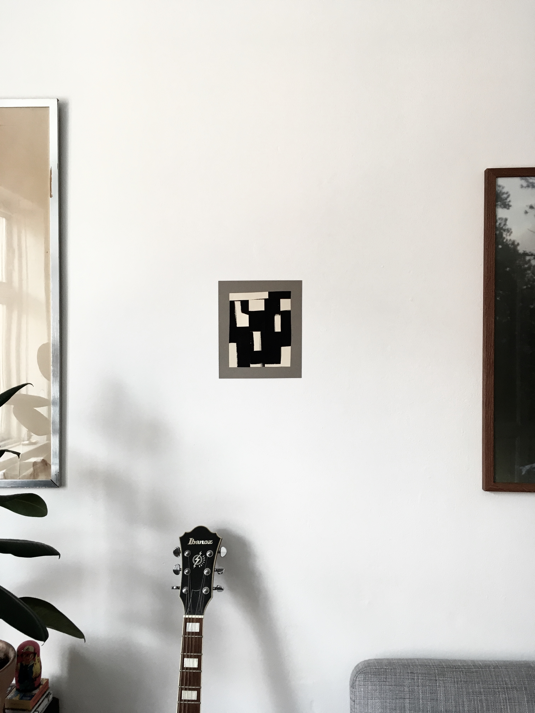
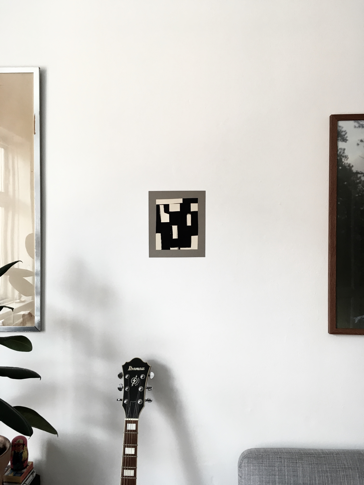
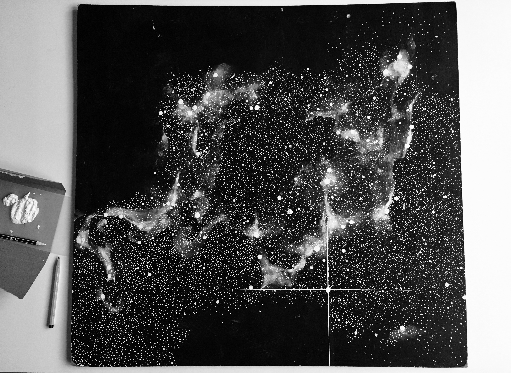
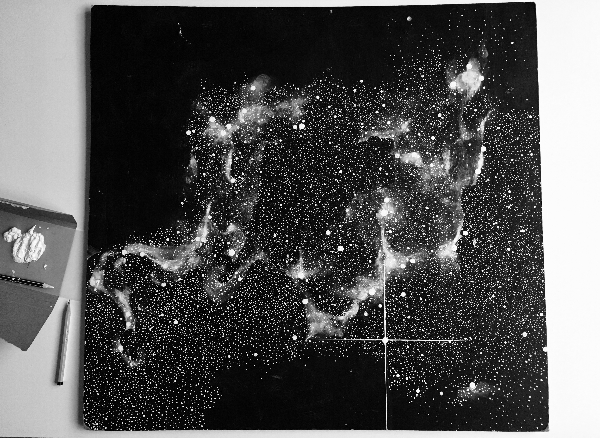

Jeg er 29 år og bor på Vesterbro sammen med min kæreste. Jeg er født i USA, har boet i Tyrkiet i nogle år som barn og ellers opvokset i valby. Min interesse for design har jeg fået af min mor, som har fået det af sin far. Han var grafiker og lavede skilte og udstillingsvinduer til butikker. Min mor er også grafiker og det virker som om det ligger i blodet at lave noget kreativt eller design relateret. Jeg har altid udfoldet mig kreativt og udforsket hvad dette betyder. Jeg kan godt lide at fordybe mig et projekt som fører til et fedt produkt. Jeg maler, tegner, laver grafiske projekter og fotograferer.
Jeg har prøvet at kaste mig ud i mange forskellige uddannelser, nogle mere akademiske og andre mere praktiske i en klassisk forstand. Men jeg fandt aldrig rigtig et ståsted. Senest har jeg læst Kunsthistorie på Københavns Universitet. Selvom jeg nød det meget, og stadig nyder kunsthistorie, så var det alt for teoretisk. I februar 2019 var jeg til optagelsesprøve på Medie og Journalisthøjskolen på linjen Fotografisk Kommunikation. Det var en lærrig proces, og selv om jeg ikke kom ind så fik jeg alligevel øjnene op for at jeg gerne ville uddanne mig inden for multimedie. Mit seneste fotoprojekt var tidliger i år da jeg tog et pressebillede af kokken og skribenten Marie Holm. Det var til et Heartland podcats afsnit der hed "Lyden Af Kaffe".
 





 

 
